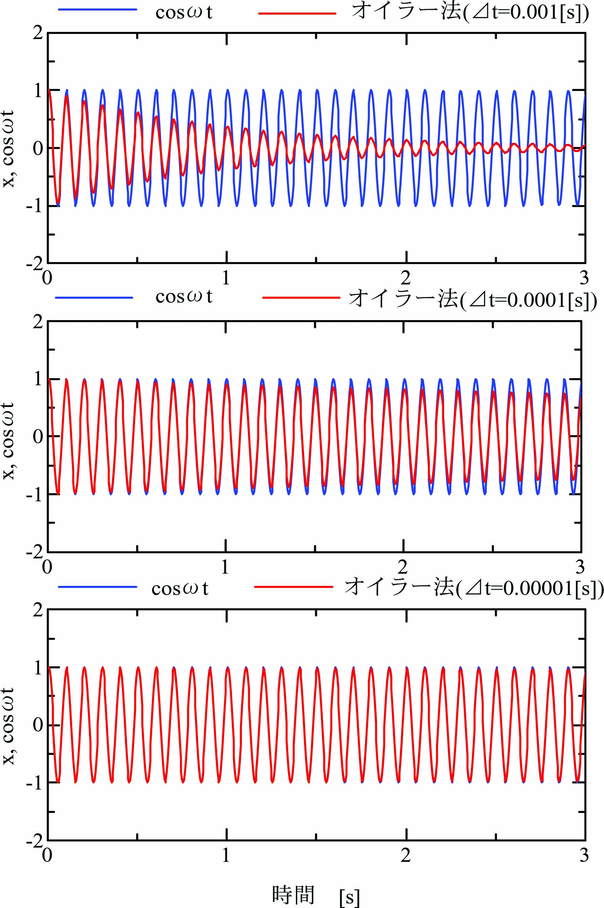

時間刻み\(\varDelta t\)[s]として、時間時間刻み\(t=n\varDelta t\)における加速度\(\ddot x(k)\)、速度\(\dot x(k)\)、変位\(x(k)\)から 時間\(t=(k+1)\varDelta t\)における速度\(\dot x(k+1)\)、変位\(x(k+1)\)を次式で逐次計算します。
\begin{align} \left. \begin{array}{@{\,}rl} \dot x(k+1) &=~ \dot x(k)+\ddot x(k)\varDelta t\\ x(k+1) &=~ x(k) + \dot x(k)\varDelta t + \frac{1}{2}\ddot x(k)\varDelta t^2 \end{array} \right\} \label{eq:EulerMtd} \end{align}線形な力学システムだけでなく、係数が時間で変化する時変系や非線形な力学システムに対して有効な方法です。 ただし、誤差が拡大しないように時間刻み\(\varDelta t\)の設定に注意が必要です。
\(\ddot x = -\omega^2x\)、\(x(0)=1\)、\(\dot x(0) = 0\)の解は\(x(t) = \cos \omega x\)となります。 これをEuler法で数値解析します。
式\eqref{eq:EulerMtd}に\(\ddot x = -\omega^2 x\)を代入します。
\begin{align} \left. \begin{array}{@{\,}rl} \dot x(k+1) &=~ \dot x(k) - \omega^2 x(k)\varDelta t\\ x(k+1) &=~ x(k) + \dot x(k)\varDelta t - \frac{1}{2} \omega^2 x(k)\varDelta t^2 \end{array} \right\} \end{align}ここでは、\(\omega=6.28\times 10\)[rad/s]に対して\(\varDelta t=0.001,0.0001,0.00001\)[s]の場合について \(t=0\)～\(3\)[s]の計算結果を観察します。
この数値計算では、サンプル時間\(T=0.005\)[s]の時間間隔で\(k\)に対して \(T/\varDelta t\)回ごとにEuler法で計算した\(x\)と\(\dot x\) をサンプルし、\(x(n)\)と\(\dot x(n)\)ます。
Euler法時間の時間刻み\(\varDelta t = 0.001\)[s]では振幅が急速に減少し、誤差が拡大されていくことを確認できます。
Euler法時間の時間刻み\(\varDelta t = 0.0001\)[s]では振幅の減少が緩和され、誤差が拡大が改善されています。
Euler法時間の時間刻み\(\varDelta t = 0.00001\)[s]では３秒間で正解(\(\cos\omega t\))とほぼ完全に一致しています。